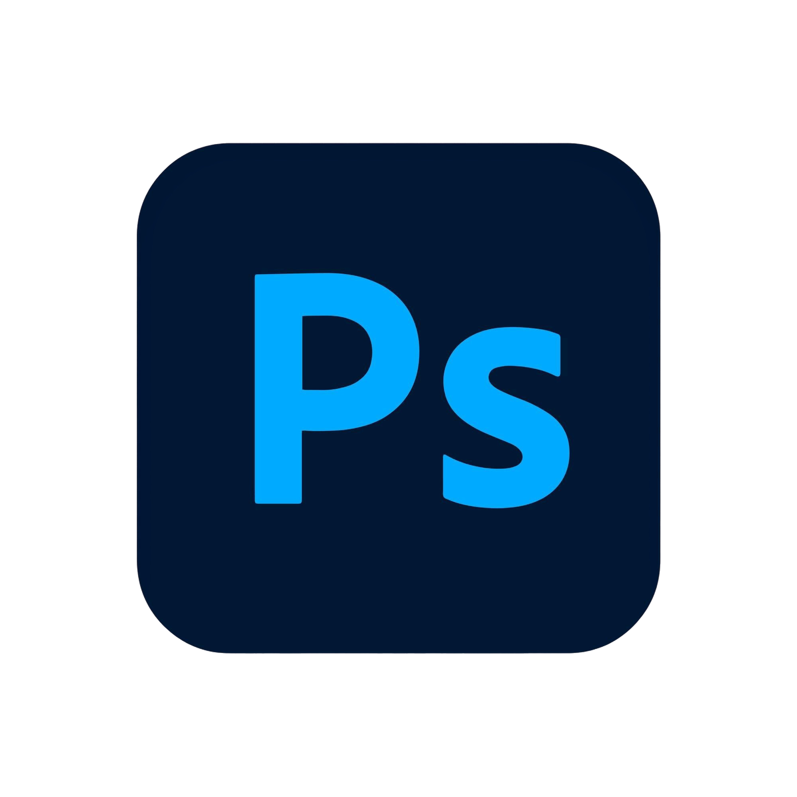
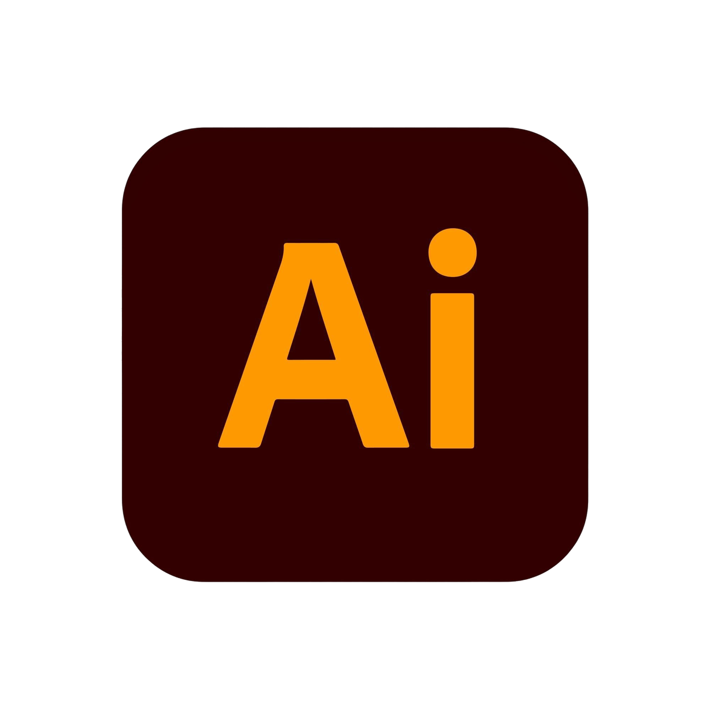
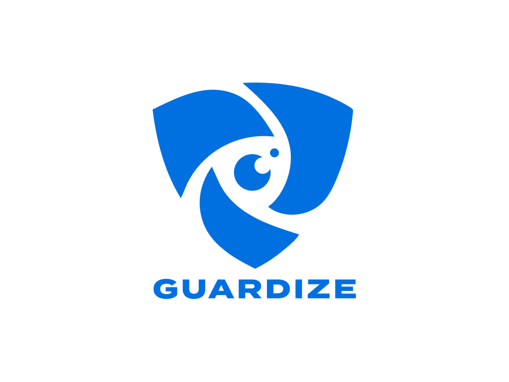
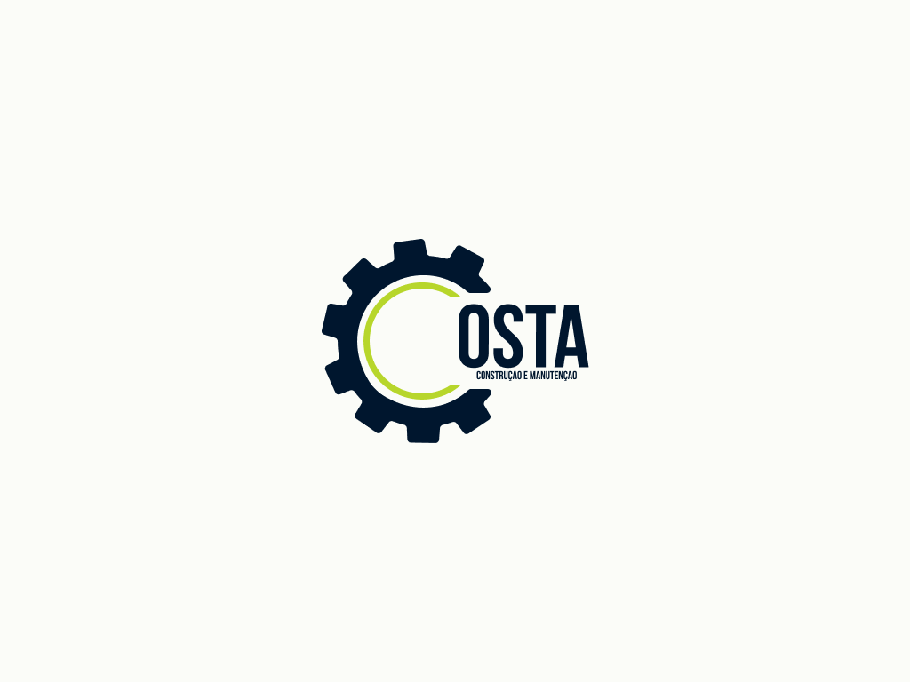
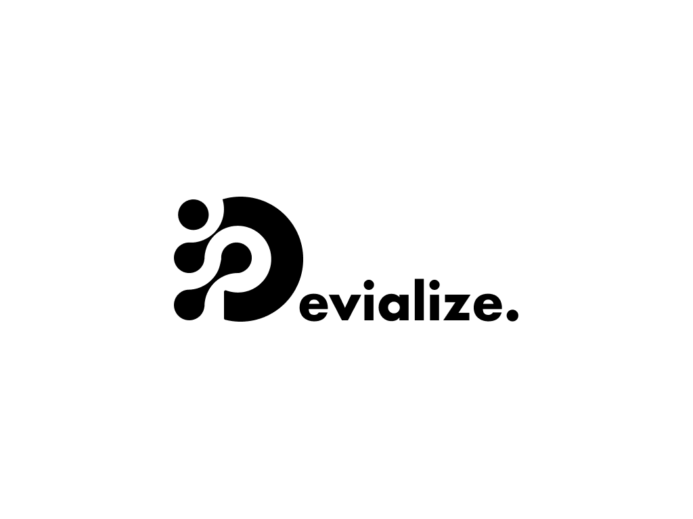
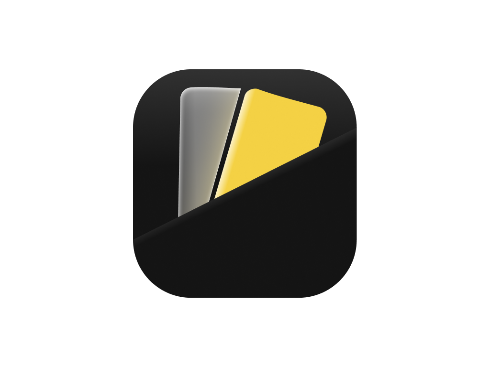
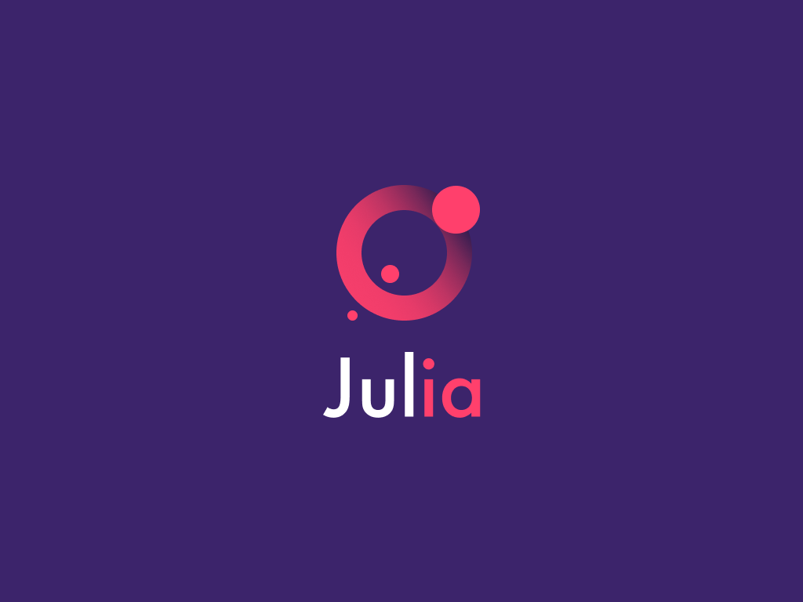
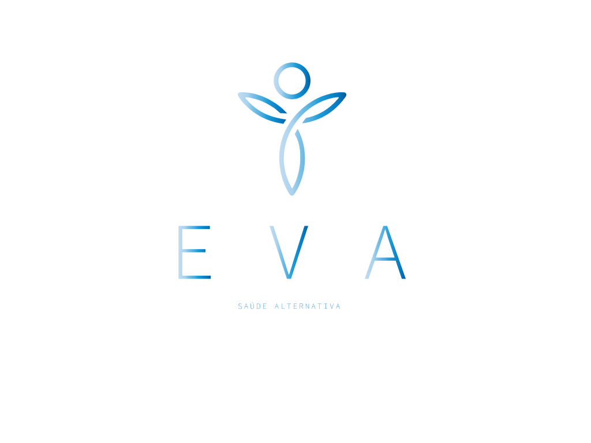

Certificados
Estudante

Olá, sou Júlia Penna
Com foco em resolver problemas através do design, criando produtos digitais que atendem às necessidades do usuário, gerando valor para o negócio. Meu processo começa com uma pesquisa de profundidade, transformando insights em protótipos de alta fidelidade (UI) e experiências fluidas. Meu conhecimento em neurociência e economia comportamental é usado para ir além do design de superfície, garantindo que cada interação seja intuitiva, estratégica e, acima de tudo, humana. Meu objetivo é me tornar uma referência na área, criando produtos que impactam positivamente a vida das pessoas.
Estudante
Busco estágios para adquirir experiência
Projetos reais








Desenvolvimento de identidade visual para a Costa, uma empresa LTDA focada em reformas e manutenções prediais e corporativas. O desafio era criar uma marca que unisse a força da construção civil com a precisão técnica da manutenção.
More projects loading... Tem muita coisa boa vindo por aí. Se quiser saber mais sobre meu processo ou discutir uma proposta de trabalho, é só me chamar!
Agendar uma conversa